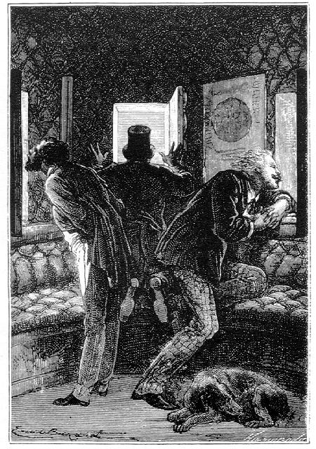

Capítol XVI
L'HEMISFERI MERIDIONAL
El projectil acabava d'escapar-se
d'un terrible perill, i perill ben imprevist. ¿Qui hauria pensat en un
tal encontre de bòlids? Aquests cossos errants podien suscitar als viatgers
greus perills. Eren per a ells com altres tants esculls sembrats en aquell mar
eteri, i que, menys venturosos que els navegants, ells no podien evitar.1
Però, ¿se'n planyien aquests aventurers de l'espai? No, perquè
la naturalesa els havia ofert aquest esplèndid espectacle d'un meteor
còsmic esclatant per una expansió formidable i perquè aquell
incomparable foc d'artifici que cap Ruggieri no hauria sabut imitar havia aclarit
durant alguns segons l'aurèola invisible de la Lluna. En aquella ràpida
clariana, continents, mars i boscos se'ls havien aparegut. ¿Aportava,
doncs, l'atmosfera, en la cara desconeguda, les seves molècules vivificants?
Problemes encara insolubles, eternament posats enfront de la curiositat humana!
Eren, llavors, dos quarts de quatre de la tarda. La bala seguia la seva direcció
curvilínia al voltant de la Lluna. La seva trajectòria, ¿havia
estat modificada, una vegada més, pel meteor? Hom ho podia témer.
El projectil devia, això no obstant, descriure una corba impertorbablement
determinada per les lleis de la mecànica racional. Barbicane s'inclinava
a creure que aquesta corba seria més aviat una paràbola que no
una hipèrbola. Tanmateix, admesa aquesta paràbola, la bala ja
hauria hagut de sortir bastant ràpidament del con d'ombra projectat a
l'espai i oposat al cantó del Sol. Aquest con, en efecte, és molt
estret, tant com el diàmetre de la Lluna és petit, si hom el compara
amb el diàmetre de l'astre del dia. Però fins aquí el projectil
flotava en aquesta profunda ombra. Qualsevol que hagués estat la seva
velocitat -que no podia ésser mediocre -, el seu període d'ocultació
encara continuava. Això era un fet evident, però potser no hauria
pas pogut ésser així en el supòsit d'una trajectòria
rigorosament parabòlica. Nou problema que turmentava el cervell de Barbicane,
veritablement empresonat en un cercle d'incògnites de les quals no es
podia alliberar.

El Sol!
Cap dels viatgers no pensava a prendre un instant de repòs. Cadascú
sotjava algun fet inesperat que aboqués una nova llum sobre els estudis
cosmogràfics. Vers les cinc de la tarda, Miquel Ardan, amb el nom de
menjar, repartí alguns bocins de pa i de carn freda, que foren consumits
ràpidament i sense que ningú hagués abandonat la seva lluerna,
en la qual el vidre s'encrostava incessantment sota la condensació dels
vapors.
Cap a tres quarts de sis de la tarda, Nicholl, amb l'ajuda de la seva ullera,
assenyalà devers el contorn meridional de la Lluna i en la direcció
seguida pel projectil alguns punts brillants que es retallaven sobre la fosca
pantalla del cel. S'hauria dit que eren una successió de pics aguts,
perfilant-se com una línia tremolosa i que s'anava aclarint bastant intensament.
Així apareix l'alineació terminal de la Lluna, quan ella es presenta
en un dels octants de les seves fases.
No hi havia Lloc a error. No es tractava pas d'un simple meteor, puix que aquella
aresta lluminosa no en tenia ni el color ni la mobilitat. Tampoc no era un volcà
en erupció. Així fou que Barbicane no vacil·là a
dir:
-El Sol! - exclamà.
-Com, el Sol! - respongueren Nicholl i Miquel Ardan.
-Sí, amics meus, és l'astre radiant que il·lumina el cim
d'aquelles muntanyes situades en el contorn meridional de la Lluna. Ens apropem,
evidentment, al Pol Sud!
-Després d'haver passat pel Pol Nord - respongué Miquel -. Hem
fet, doncs, la volta al nostre satèl·lit!
-Sí, estimat Miquel.
-Llavors, res d'hipèrboles, res de paràboles i res de corbes obertes
per témer!
-No, però sí una corba closa.
-Què se'n diu?
-Una el·lipse. En lloc d'anar a perdre's pels espais interplanetaris,
probablement el projectil ha fet una òrbita el·líptica
entorn de la Lluna.
-De veritat!
-I n'esdevindrà el satèl·lit.
-Lluna de la Lluna! - exclamà Miquel Ardan.
-Només que et faré remarcar, digne amic meu - replicà Barbicane
-, que no per això estarem nosaltres menys perduts!
-Sí, però d'una altra manera, i, a més, força divertida!
- respongué el descurat francès amb el seu millor somriure.
El president Barbicane tenia raó. En descriure el projectil aquesta òrbita
el·líptica, anava sens dubte a gravitar eternament al voltant
de la Lluna, com un subsatèl·lit. Era un nou astre afegit al món
solar, un microcosmos poblat per tres habitants, que per manca d'aire no trigarien
a morir. No podia, per tant, alegrar-se Barbicane d'aquesta situació
definitiva, imposada a la bala per la doble influència de les forces
centrípeta i centrífuga. Els seus companys i ell tornaven a veure
la cara il·luminada del disc lunar. Potser àdhuc llur existència
s'allargaria prou perquè poguessin tornar a veure per darrera vegada
la Terra plana, magníficament il·luminada pels raigs del Sol!
Potser podrien donar un darrer adéu a aquest globus que no havien de
tornar a veure més! Després, llur projectil no fóra res
més que una massa extingida, morta, semblant a aquests inerts asteroides
que circulen per l'èter. L'única consolació per a ells
era de tornar a veure les zones banyades per la irradiació solar!
Mentrestant, les muntanyes reconegudes per Barbicane es deseixien més
i més de la massa fosca. Eren els monts Doerfel i Leibnitz, que s'aixequen
al sud de la regió circumpolar de la Lluna.
Totes les muntanyes de l'hemisferi visible han estat amidades amb una perfecta
exactitud. Hom se sorprendrà, potser, d'aquesta perfecció, i,
això no obstant, aquests mètodes hipsomètrics són
exactes. Hom pot àdhuc afirmar que l'altitud de les muntanyes de la Lluna
no està menys exactament determinada que la de les muntanyes de la Terra.
El mètode més correntment emprat és aquell que amida l'ombra
projectada per les muntanyes, tenint en compte l'alçada del Sol en el
moment de l'observació. Aquest mesurament s'aconsegueix amb facilitat
per mitjà d'una ullera de llarga vista proveïda d'un reticle de
dos fils paral·lels, i ja que el diàmetre real del disc lunar
ens és perfectament conegut. Aquest mètode permet de calcular
igualment la profunditat dels cràters i les cavitats de la Lluna. Galileu
l'emprà, i més endavant Beer i Moedler amb el més gran
èxit.
Un altre mètode, anomenat dels raigs tangents, pot ésser també
aplicat per a amidar els relleus lunars. Hom l'aplica al moment en què
les muntanyes formen punts lluminosos destacats de la línia de separació
d'ombra i de llum, que brillen sobre la part ombrívola del disc. Aquests
punts lluminosos són produïts pels raigs solars superiors als que
determinen el límit de la fase. Per tant, s'amida l'interval obscur que
deixa entre ells el punt lluminós i la part lluminosa de la fase més
propera, i donen exactament l'alçada d'aquest punt. Però ja es
comprèn que aquest procediment només pot ésser aplicat
a les muntanyes que estan a prop de la línia de separació d'ombra
i de llum.
Un tercer mètode consisteix a mesurar el perfil de les muntanyes lunars
que es dibuixen en el fons, per mitjà del micròmetre,2
però aquest aparell és aplicable només en les altituds
properes al contorn de l'astre.
En cadascun d'aquests tres sistemes, hom remarcarà que aquest mesurament
de les ombres, dels intervals o dels perfils només pot ésser executat
quan els raigs solars toquen obliquament la Lluna en relació amb l'observador.
Quan la toquen directament, en una paraula, quan ella és plana, tota
ombra és forçosament bandejada del seu disc, i l'observació
ja no és possible.
Galileu, que fou el primer, després d'haver reconegut l'existència
de les muntanyes lunars, emprà el mètode de les ombres projectades
per a calcular-ne les altituds. Va donar-los, com ja hem dit, una mitjana de
quatre mil cinc-centes toeses. Hevelius rebaixà singularment aquestes
xifres, que Riccioli, en canvi, va doblar. Aquests mesuraments eren exagerats
d'una banda i de l'altra. Herschell, armat d'instruments perfeccionats, s'acostà
molt a la veritat hipsomètrica. Però, aquesta, calgué cercar-la,
foralment, en les informacions donades pels observadors moderns.
Beer i Moedler, els millors selenògrafs de tot el món,3
han mesurat mil noranta-cinc muntanyes lunars. De llurs càlculs resulta
que sis d'aquestes muntanyes s'aixequen per damunt dels cinc mil vuit-cents
metres, i vint-i-dos per damunt dels quatre mil vuit-cents. El més alt
cim de la Lluna amida set mil sis-cents tres metres; és, doncs, inferior
als de la Terra, alguns dels quals passen de cinc a sis-centes toeses.4
Però aquí convé de fer una observació. Si hom compara
els volums respectius dels dos astres, les muntanyes lunars són relativament
més enlairades que no les muntanyes terrestres. Les primeres formen una
quatre-centes setantena part del diàmetre de la Lluna, i les segones
només una mil quatre-centes quarantena part del diàmetre de la
Terra. Perquè una muntanya terrestre assoleixi les proporcions relatives
d'una muntanya lunar, caldria que la seva altitud perpendicular mesurés
sis llegües i mitja.5 I la més enlairada encara
no arriba ni als nou quilòmetres.
Així, doncs, per procedir per comparació,6
la serralada de l'Himalaia compta amb tres pics superiors als cims lunars: el
mont Everest, de 8.884 metres d'altitud, el Kanchenjunga, amb una alçària
de 8.603 metres, i el Dhaulagiri, que té 8.167 metres. Els monts Doerfel
i Leibnitzs de la Lluna tenen una altitud igual a la del Jewahir7
de la mateixa serralada, o sigui 7.603 metres.8 Newton,
Casatus, Curtius, Short, Tico, Clavi, Blancanus, Endimió i els principals
cims del Caucas i dels Apenins són superiors al Mont-Blanc, que té
4.807 metres. Són iguals al Mont-Blanc: Moret, Teòfil i Caterina.
Al Mont Rosa (4.638 m) Piccolomini, Werner i Harpalus. Al Cerví o Matterhorn
(4.505 m) : Macrobi, Eratòstenes, Albategnius i Delambre. Al pic de Teide,
a Tenerife (3.707 m) : Bacon, Cysatus, Filolaus i els pics dels Alps.9
Al Mont Perdut, als Pirineus (3.352 m) : Roemer i Bogulawski. A l'Etna (3.279
m.) : Hèrcules, Atlas i Fournier.
Tals són els punts de comparació que permeten d'avaluar l'alçada
de les muntanyes lunars. I ara bé, precisament, la trajectòria
seguida pel projectil se l'enduia devers aquesta regió muntanyosa de
l'hemisferi sud, allí on s'aixequen els més bells models de l'orografia
lunar.
1. Per defensar-se d'aquest perill dels aeròlits
o el d'altres cossos errants de l'espai procedents dels actuals experiments
engegats per la mà de l'home i que per la seva mida poden representar
algun perill, les futures astronaus aniran protegides per un deflector de meteorits,
el qual, apuntant-los automàticament, els desintegrarà abans que
topin amb el vehicle espacial. (N. del T.)
2. El micròmetre fou emprat per primera vegada per
Guillem Herschell el 1777. (N. del T.)
3. Naturalment, en l'època en què Juli Verne
escriví aquesta novel·la, que fou en 1865 i 1866. (N. del T.)
4. De 1.000 a 1.200 metres.
5. O sigui, prop de 26 quilòmetres. (N. del T.)
6. Advertim al lector que algunes de les formacions lunars
que a continuació s'esmenten no tenen l'altitud que els assenyala Juli
Verne. (N. del T.)
7. No tenim notícia de cap pic de l'Himalaria amb
el nom de Jewahir. Han estat infructuoses les nostres recerques, tot i haver-nos
adreçat a la "Royal Geographical Society", de Londres, en aquest
sentit. Tanmateix, aquella docta institució anglesa ha arribat a insinuar
si no es tractaria tal vegada d'un cim d'alguna de les localitats de les Himalaies,
normalment designades amb l'addició del mot "Himal". Això,
o també, tenint en compte l'altitud assenyalada per Juli Verne, que no
sigui algun dels cims innominats del Karakoram, la regió més occidental
de l'Himaiaia, tals com el K.12, el K.23 o el K.24 (N. del T.)
8. Precisarem millor dient que alguns dels cims dels monts
Doerfel es perfilen sobre el contorn lunar assolint una altitud que sobrepassa,
probablement, els 7.000 metres, mentre que molts altres van dels 4.500 als 6.000
metres. La dificultat rau en el fet que són rarament visibles i només
es deixen veure quan la libració és favorable.
I a la serralada de Leibnitz, que és la més enlairada cadena de
muntanyes de la cara visible de la Lluna, també li esdevé el mateix,
car una part del seu relleu orogràfic s'estén a l'hemisferi invisible
Però, quan la libració ho permet, els seus cims s'esglaonen dels
7.300 fins als 9.000 metres. Tanmateix, bom els fixa, sense exageració,
una altitud de 8.200 metres. (N. del T.)
9. Particularment el Mont-Blanc lunar, de 3,617 metres,
situat en un extrem de la Vall dels Alps. (N. del T.)